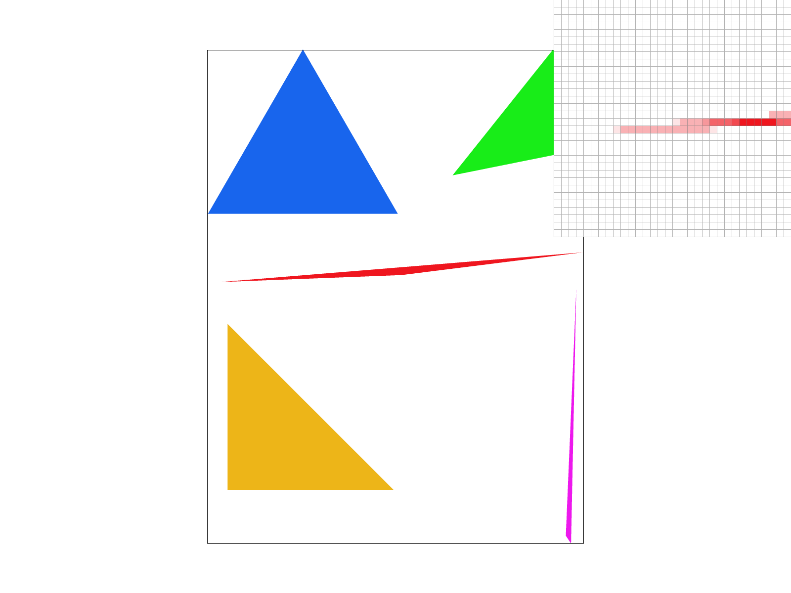
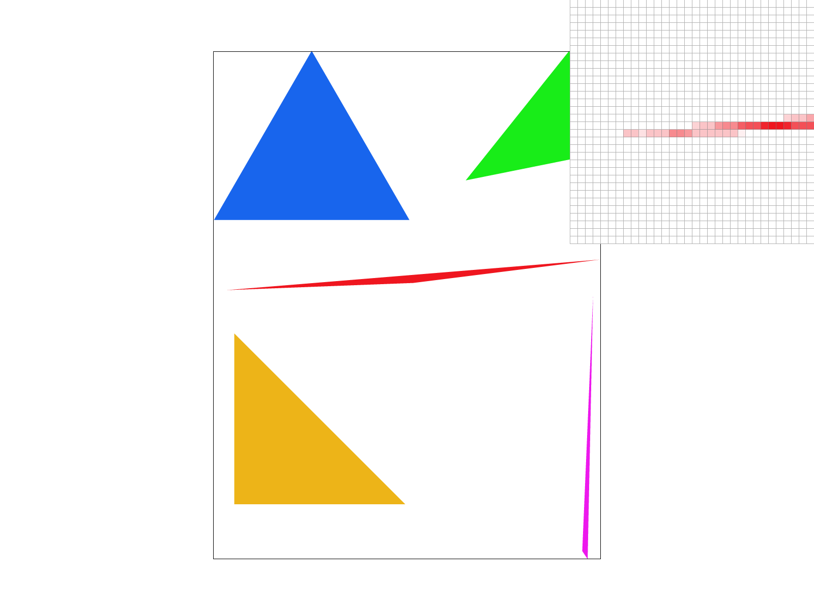
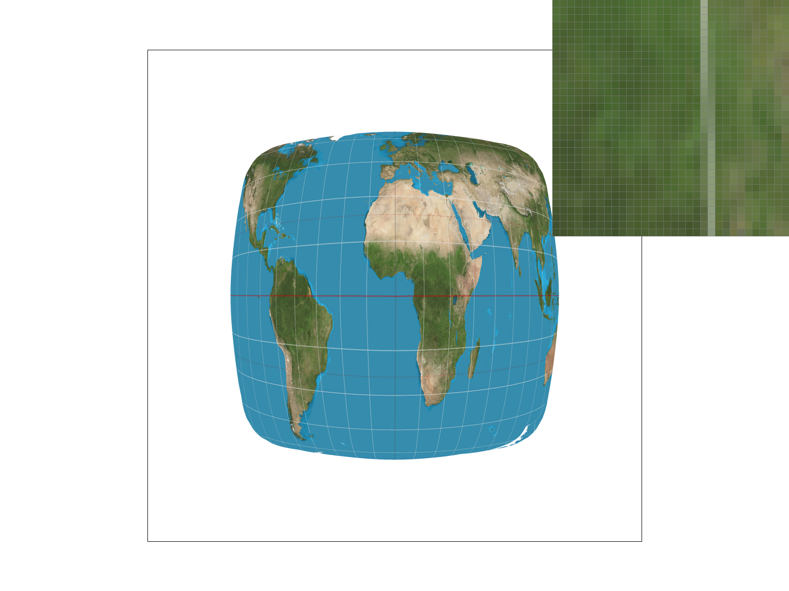
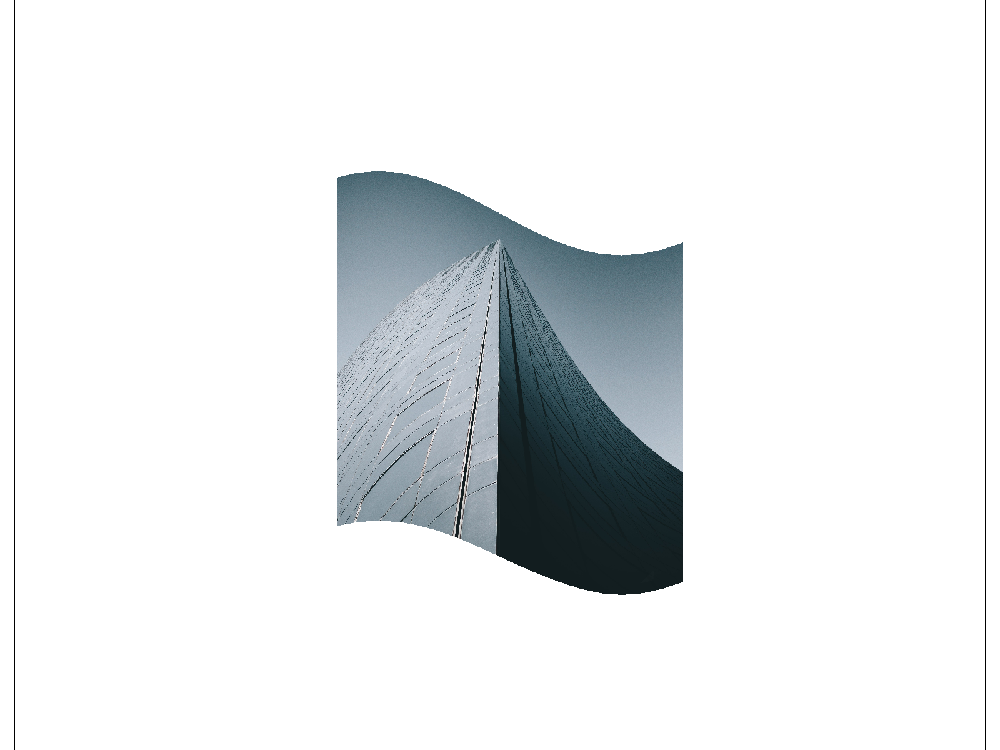

CS184/284A Spring 2025 Homework 1 Write-Up
Names: Ethan Zhang and Ray Zhang
Link to webpage: https://cal-cs184-student.github.io/hw-webpages-sendhelp2/hw1/
Link to GitHub repository: https://github.com/cal-cs184-student/hw-webpages-sendhelp2
Overview
In this homework, I implemented a variety of techniques to reduce aliasing and enable texture mapping of geometries onto texel maps. In the first task, I learned to rasterize triangles by using line-tests on each of the edge. Then, I worked on supersampling for the second task which enabled a higher resolution sampling of the underlying geometry whilst also downsampling to reduce aliasing. In order to enable transformations, I learned about homogenous coordinates and applied matrix multiplication on the vertices. Lastly, in order to put finer details on the faces of the geometry, I worked on various versions of texture sampling techniques that brought sampled texels onto the original geometry coordinates. Throughout the homework, I found it interesting that by sampling from a mipmap level with less resolution can actually help with aliasing issues. Specifically, I thought the blurring would be more noticeable but with nearest level sampling, the finer details were still preserved. I also saw that bilinear level sampling generally didn't affect aliasing too well and caused some more visible blurring in areas with high contrast edges--in my opinion it wasn't worth the extra lerp / multiplication in some cases.Task 1: Drawing Single-Color Triangles
Rasterizing Triangles in my own Words
First, I found the bounding box for the triangle (by taking the mins and maxes of the vertices x / y coordinates). Then, I found the winding order of the vertices via a cross-product test of two consecutive edges learned during discussion 2. In combination with the winding order, I set up the line test described in lecture 2. Looping through the points in the bounding box, I was able to check the middle of the points with the line tests and chose to "fill the pixel" in the frame buffer with the given color if all 3 line tests passed.A Comparison to Other Rasterization Techniques
Our algorithm loops through each of the sample points within the bounding box of the triangle. For each of the sample, we use constant time calculations for determining whether or not it resides within the bounds of edges by implementing 3 of the line tests as discussed in lecture. In this way, our algorithm is no worse than one that checks each sample within the bounding box of the triangle. Although it was possible to implement some type of incremental or tiled triangle traversal, there wasn't a particular framework provided to do parallel computations of point-in-triangle tests and it would also incur additional branching costs for determining whether or not the algorithm has reached a boundary and needs to redirect.Png Screenshot of basic/test4.svg
Task 2: Antialiasing by Supersampling
Supersampling Walkthrough
In order to super sample, I first made sure to modified howsample_buffer was initialized and resized
to also
multiply the sample_rate since each pixel refers to sample_rate additional pixels now.
Then, during the
rasterization stage, I used the updated sample_rates to subdivide the pixel region and update sample_buffer using
the new indexing method of \[ (y * sqrt\_sample\_rate + j) * width * sqrt\_sample\_rate + x * sqrt\_sample\_rate + i
\]
Lastly, when resolving to the final frame buffer, I took the average of all the supersamples corresponding to a
pixel; in
other words, I down sampled for the final frame.
Super sampling is useful because the latter downscaling step averages out the samples within a pixel which effectively antialiased the triangle edges and reduces the amount/impact of jaggies.
Supersampling Results
|
|
|
|

|

|
Before super sampling, the very left tip of the red triangle had a disconnected and uncharacteristic straight line of pixels. This was due to the sampling locations being very close to the triangle boundaries which made neighboring samples sometimes being out/in the boundary even though the majority of the region the pixel occupies was mostly triangle/not. With super sampling, we take the average of multiple samples within a pixel which is able to encapsulate the super fine tip a lot better.
Task 3: Transforms
Cubeman Waving
Task 4: Barycentric coordinates
Barycentric Coordinates Overview
Smoothly Blended Color Wheel
Task 5: "Pixel sampling" for texture mapping
Pixel Sampling Overview
Pixel sampling is the idea of mapping a non-integer location onto a grid of values. In the context of texture mapping, we are able to find the exact position of where to source from the texture map but the texture map itself is still in a grid of values. Thus, there are two sampling methods we can use. The first method we used was the "nearest" method which finds the closest pixel in the texel to the texture coordinate. Next is the bilinear filtering method which finds the 4 nearest pixels and averages the values using a linear interpolation of the distances between the exact location and the 4 nearest neighbors.Nearest Sampling vs. Bilinear Sampling
|
|
|
|
|

|
In the above examples, the nearest sampling gave a lot more defined edges and jaggies. This was smoothed out at 16 pixel sampling but was very visible in the 1 pixel sampling since it was possible for a slightly slanted line to have some disconnects. With bilinear filtering, this problem was more so removed since it was more likely that a sampled texture location of a point on a line would have 4 neighbors with at least one containing the color of the line even if it is not directly the nearest neighbor. Thus, any clearly identifiable lines and high contrast regions would prove the bilinear filtering method to have better results.
Task 6: "Level Sampling" with mipmaps for texture mapping
Level Sampling Overview
Level sampling is a way to utilize mipmaps inside of texture mapping. Mipmaps are a multi-layer representation of a texture image where each subsequent layer is downsampled from the previous. Then, to estimate which level is appropriate to use for a specific geometry in the scene, it is possible to estimate the impact of the texture by seeing how far the neighboring texture samples are.Using these concepts, I mapped neighboring pixel samples to the texture coordinates and used the lecture formulas for D / L estimations.Difference in Implemented Techniques
In the context of texture mapping, changing the pixel sampling method from nearest pixel to bilinear pixel interpolation would incur additional performance cost of calculating the lerp between the 4 nearest neighbors and the 4 texel reads needed to get the corresponding neighbor values. This does not increase memory usage. As shown in the previous task, this does improve anti aliasing power since higher contrast areas are averaged out and contribution of each pixel is more likely to be accounted for.By enabling level sampling, we are committed to generating and storing the mipmaps for each texel which would increase the memory usage and decrease the upfront speed. Once the mipmaps are ready, there are additional performance costs since there is the need to estimate the level for which each texel is set to appear at. With nearest level and bilinear level sampling, the anti aliasing power is like that of supersampling since each level is calculated via down-sampling.
Supersampling, with the naive sample buffer method, increases both the computational cost and memory usage for the rendering pipeline. This is because at each sample we are taking 4, 9, 16x additional samples of the base geometry. This incurs the corresponding amounts of additional line tests whilst also having the need to store the additional samples. Lastly, at the frame buffer transformation stage, an average is needed. Still, this downsampling stage allows supersampling to effectively increase the resolution of the rendering which reduces aliasing.
Visual Comparison
|

|
|

|

|
In the above visualization, a few things to notice when applying the different transformations are:
- the jaggies on the large crack running up the length of the building
- the forefront corner of the building has ledge-like features where the edge suddenly shifts
- moire pattern near the top of the building